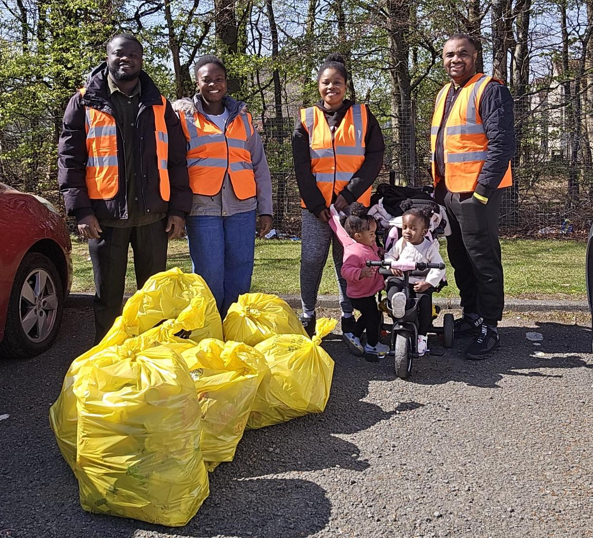

About Kigami
Kigami Projects is a community-driven environmental initiative focused on creating cleaner, safer, and more responsible communities through practical action.
From environmental clean-ups and bus stop restoration projects to upcycling and reuse initiatives, we work with communities to reduce waste, improve public spaces, and promote sustainable living.
We believe small actions create lasting change. By bringing people together, encouraging environmental responsibility, and giving overlooked spaces and materials a second life, we are building a culture of community pride and sustainability.
Whether you're donating, shopping, or volunteering, you're helping build a future where sustainability is a shared way of life.